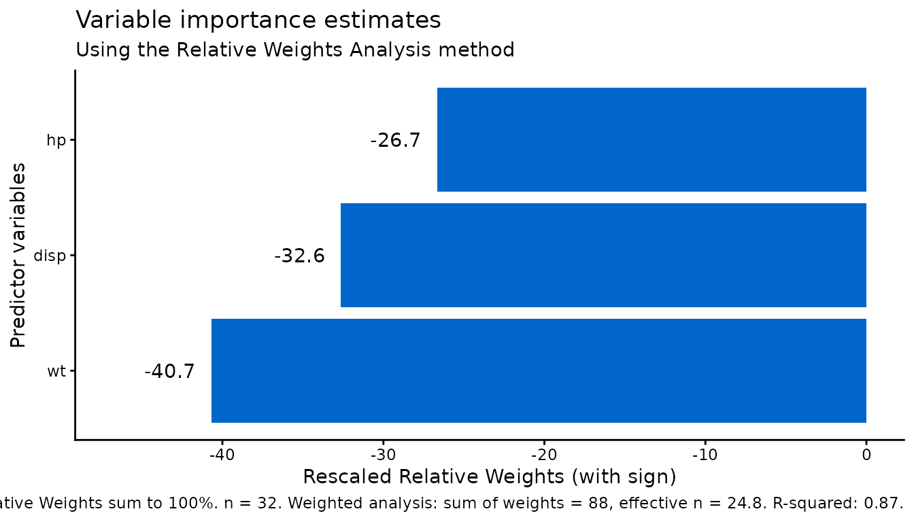

Observation weights and missing data
Source:vignettes/weighted-missing-data.Rmd
weighted-missing-data.RmdWeighted point estimates
Use weight to name a numeric column of observation
weights. Non-missing weights must be finite and strictly positive; zero
weights are not supported. The outcome and predictors must be numeric.
Weighted RWA decomposes the R-squared from the weighted correlation
matrix, matching weighted least-squares regression with an intercept on
the same retained rows.
d <- mtcars
d$observation_weight <- rep(c(1, 2, 5, 3), 8)
fit <- rwa(d, "mpg", c("hp", "wt", "disp"), method = "multiple",
weight = "observation_weight", sort = FALSE)
fit$result
#> Variables Raw.RelWeight Rescaled.RelWeight Sign
#> 1 hp 0.2322933 26.66020 -
#> 2 wt 0.3546032 40.69765 -
#> 3 disp 0.2844148 32.64215 -
c(rwa = fit$rsquare,
weighted_lm = summary(lm(mpg ~ hp + wt + disp, data = d,
weights = observation_weight))$r.squared)
#> rwa weighted_lm
#> 0.8713113 0.8713113Multiplying every weight by the same positive constant leaves
relative weights, R-squared, and n_effective unchanged.
Integer weights also give the same point estimates as repeating each row
that many times. These point-estimate equivalences do not imply
equivalent bootstrap sampling designs.
d$scaled_weight <- 100 * d$observation_weight
scaled <- rwa_multiregress(d, "mpg", c("hp", "wt", "disp"), weight = "scaled_weight")
all.equal(fit$result, scaled$result)
#> [1] TRUE
c(original_effective = fit$n_effective, scaled_effective = scaled$n_effective)
#> original_effective scaled_effective
#> 24.82051 24.82051Missing-data contract
Rows with missing outcomes are always removed first,
even with use = "all.obs" or "everything". For
unweighted analysis, use then applies to correlations among
the retained outcome and predictors:
use |
Unweighted behavior after removing missing outcomes |
|---|---|
"pairwise.complete.obs" (default) |
Use available pairs for each correlation. An incompatible joint matrix causes an error. |
"complete.obs" |
Use rows complete on all analysis variables. |
"na.or.complete" |
Use complete rows when available. cor() would return
NAs when none exist; RWA instead reports insufficient data. |
"all.obs" |
Error if remaining predictors contain missing values. |
"everything" |
Missing values propagate to correlations; a non-finite matrix causes an informative RWA error. |
With weights, the default is effectively complete-case analysis, not weighted pairwise correlation. After removing missing outcomes:
- Missing weights cause an error for
"all.obs"and are removed for every other mode. - Rows with missing predictors are removed for every weighted
mode, including
"all.obs"and"everything".
These exceptions preserve the package’s existing preprocessing.
all.obs does not mean that every value in the original
input must be observed. Weights are validated for type, finiteness, and
positivity before row filtering.
d$mpg[1] <- NA
d$observation_weight[2] <- NA
d$hp[3] <- NA
missing_fit <- rwa(d, "mpg", c("hp", "wt", "disp"), method = "multiple",
weight = "observation_weight")
retained <- complete.cases(d[c("mpg", "hp", "wt", "disp", "observation_weight")])
c(n = missing_fit$n, retained_rows = sum(retained),
n_weighted = missing_fit$n_weighted,
retained_weight_sum = sum(d$observation_weight[retained]))
#> n retained_rows n_weighted retained_weight_sum
#> 29 29 80 80Counts and effective sample size
-
nretains its existing meaning: the complete-case count for the selected variables (and weight, if provided). Unweighted pairwise correlations may use more observations than this conservative count. -
n_weightedis included only for weighted results and sums original weights after outcome, missing-weight, and predictor-completeness filters. It represents population size only when weights are calibrated to that scale and the retained rows represent the intended population scope. Arbitrarily normalized weights do not supply a population count. -
n_effectiveis included only for weighted results and is Kish’s unequal-weighting effective sample size:(sum(w)^2) / sum(w^2). The calculation first scales weights by their maximum to avoid overflow or underflow when squaring them. It ignores clustering, stratification, and relationships between weights and outcomes. It is not model degrees of freedom, exact RWA precision, or a complete survey design effect.
Both exported paths, rwa() and
rwa_multiregress(), return these weighted-only diagnostics.
Unweighted result names and structure are unchanged.
plot_rwa() reports both diagnostics in the caption for
weighted results, so a weighted chart is not mistaken for an unweighted
one:
plot_rwa(fit)
Bootstrap scope and failure policy
bootstrap = TRUE performs independent, identically
distributed (iid) individual-row resampling with
replacement. Each sampled row carries its original weight, and
sampling is not proportional to weights. Missing outcomes are removed
before resampling, but missing-weight and predictor filters apply
within each sample. Consequently, the sampling frame
can be larger than the point estimate’s complete-case data and
individual samples can retain different numbers of rows.
A weight column does not encode clusters, strata, selection dependence, or replicate-weight designs. This interface is observation-weighted RWA with an iid-row bootstrap, not general complex-survey variance estimation. The appropriateness of ordinary row resampling depends on the sampling design; use design-aware methods when the iid-row assumptions are unsuitable.
set.seed(42)
boot_fit <- rwa(d, "mpg", c("hp", "wt", "disp"), method = "multiple",
weight = "observation_weight", bootstrap = TRUE,
n_bootstrap = 1000, comprehensive = TRUE)
boot_fit$bootstrap$ci_results$random_comparisonComprehensive analysis compares each requested predictor to an added
random predictor, even without a focal predictor. Supplying, for
example, focal = "wt" additionally compares the other
predictors to wt. Interval labels follow the requested
predictor order, independently of result sorting.
Every sample must estimate the same requested model. A constant column, singular predictor matrix, or invalid joint matrix causes a clear error and stops the bootstrap. Samples are not skipped or retried, predictors are not dropped, and statistics are not recycled. A rare binary predictor that loses its minority category in a sample is one such failure. Inspect predictor variation, sample size, and missingness rather than treating incomplete bootstrap output as valid intervals.
Matrix diagnostics
The full joint outcome/predictor correlation matrix must be finite,
have the expected variable identities and dimensions, and be positive
semidefinite within tolerance. Its smallest eigenvalue must be at least
minus
sqrt(.Machine$double.eps) * max(1, max(abs(eigenvalues))).
The predictor block must have strictly positive computed eigenvalues and
its transformation must be solvable. No additional conditioning cutoff
is imposed on previously estimable models. Highly correlated predictors
can still produce sensitive estimates, so inspect their stability rather
than treating successful numerical execution as evidence of reliable
individual weights.
Calculated R-squared is also checked: values above
1 + sqrt(.Machine$double.eps) produce an error, not a
clipped result. This separate check is needed because nearly collinear
predictors can amplify a small joint-matrix error into a materially
impossible fit.
A singular joint matrix is valid for an exact fit
when the predictor block remains invertible. A
materially indefinite joint matrix is not valid, even if its predictor
block is invertible: pairwise correlations computed on different row
subsets can otherwise produce an impossible R-squared above one.
Consider use = "complete.obs" and inspect missingness if
this occurs; changing the retained sample changes the analysis and is
not an automatic repair.
No eigenvalue clipping, matrix repair, or automatic change to complete cases is performed. Constant variables, insufficient observations, and zero R-squared (for which rescaled relative weights are undefined) also produce informative errors.